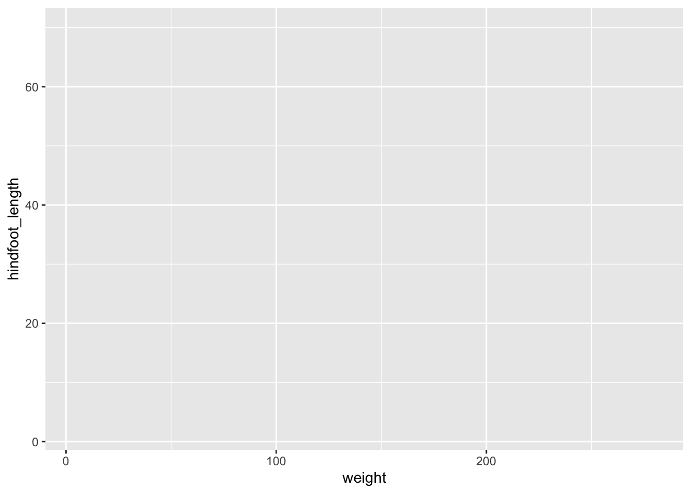
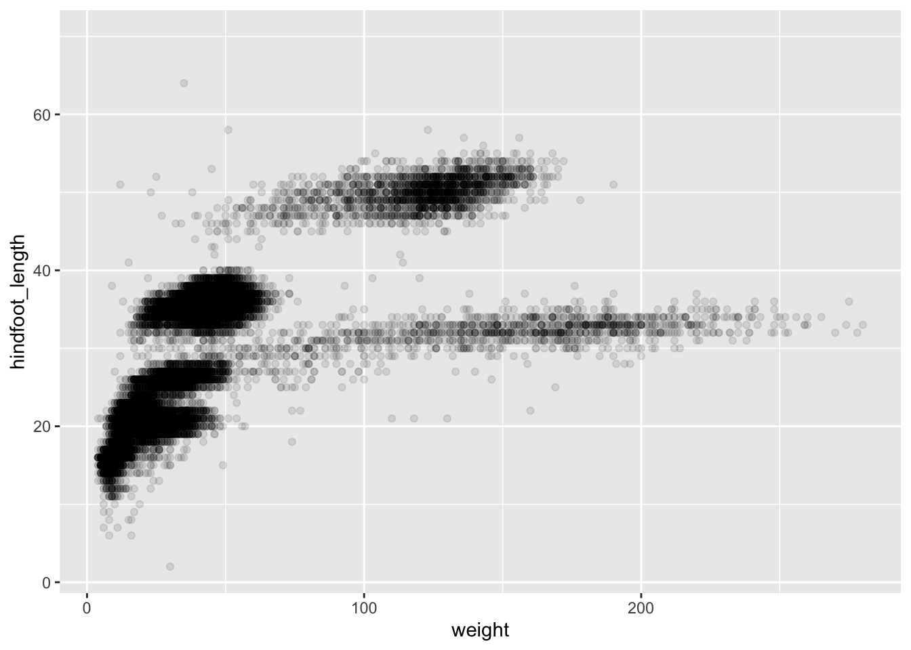
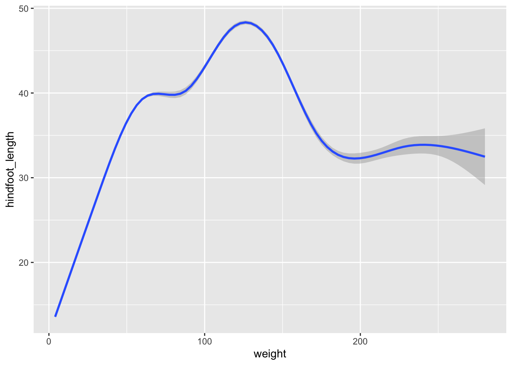
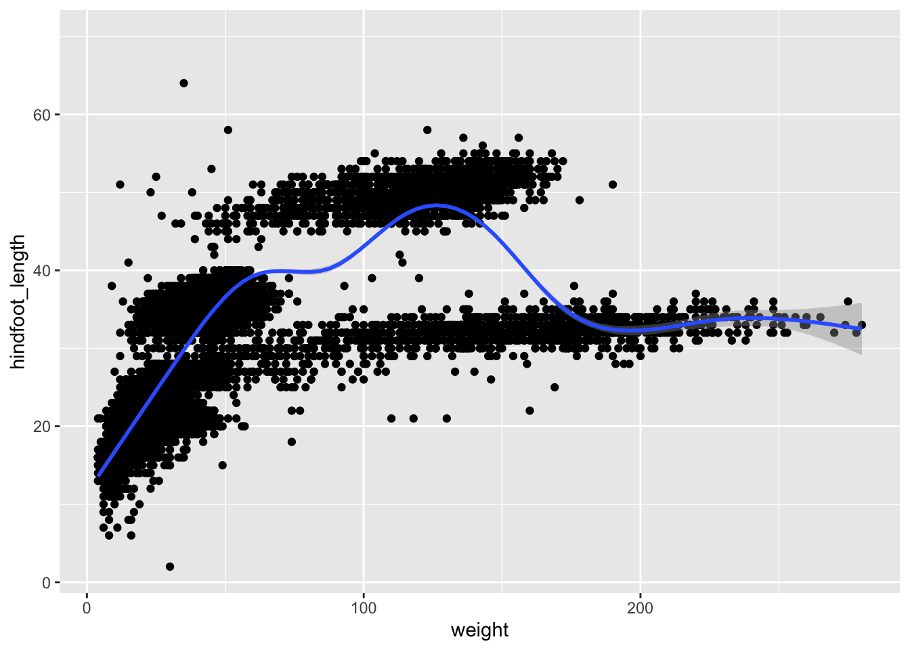

Data visualisation with tidyverse
Alexia Cardona & Martin van Rongen
Visualising data in R

Visualising is probably one of the most satisfying parts of doing data analysis, after all most people probably like a nice graph! Thankfully tidyverse makes this very easy for us, using the ggplot2 package. We will be using this package to create some plots. ggplot2 is a very popular package used for plotting mainly due to its simple, modular way to create plots from tabular data.
To create a plot, we will use the following basic template.
ggplot(data = <DATA>, mapping = aes(<MAPPINGS>)) + <GEOM_FUNCTION>()As you can see there are 3 main elements that you need to create a plot:
The ggplot function takes 2 arguments:
- data: This is the data frame to attach to the plot. The data frame must contain the variables to plot as columns and the rows must contain the observations that you need to plot.
- mapping: Aesthetic mappings describe how variables in the data are mapped to visual properties of the plot.
Using the ggplot function on its own will not plot anything. We need to add a geom_function as a layer. Layers are added to plots by using +. They are added on top of the other previous layers that might be present.
- geom_function: This specifies the type of plot would you like to plot. The greatest advantage of this is that you can easily change the plot type by just changing the geom_function and keeping everything else the same. You can see a whole list of plots that you can plot here.
Let us practice this on our surveys dataset. We would like to create a scatter plot with weight on the x-axis, hindfoot_length on the y-axis

Adding layers
As you can see if you just specify the ggplot function with the data and aesthetic mappings, it will just create an empty plot. Let us now add the geom_function for the scatter plot (geom_point) as a layer to the plot:

You can customise some of the visualisations of the plot to extract more information from it. For instance, we can add transparency (alpha) to avoid overplotting:

You can find a list of aesthetics for each type of plot in the ggplot2 cheat sheet.
We can also add colours for all the points:
ggplot(data = surveys, mapping = aes(x = weight, y = hindfoot_length)) +
geom_point(alpha = 0.1, colour = "blue")
If we would like to try other type of plots on the data, the best thing is to save the ggplot into a variable as below:
# Assign plot to a variable
surveys_plot <- ggplot(data = surveys,
mapping = aes(x = weight, y = hindfoot_length))
# Draw a scatter plot
surveys_plot +
geom_point()Now draw a geom_smooth plot. This plot is good when you need to see if there is any pattern between the two variables being plotted that you would not normally see in a scatter plot due to overplotting.

Rather than seeing each plot separately, sometimes plotting multiple plots on top of each other is a better way. You can add multiple plots as layers on top of each other as follows:

Note
- Anything you put in the
ggplot()function can be seen by any geom layers that you add (i.e., these are universal plot settings). - You can also specify mappings for a given geom independently of the mappings defined globally in the
ggplot()function. - The
+sign used to add new layers must be placed at the end of the line containing the previous layer. If, instead, the+sign is added at the beginning of the line containing the new layer, >ggplot2will not add the new layer and will return an error message.
# This is the correct syntax for adding layers
surveys_plot +
geom_point()
# This will not add the new layer and will return an error message
surveys_plot
+ geom_point()Challenge
Scatter plots can be useful exploratory tools for small datasets. For data sets with large numbers of observations, such as the
surveysdata set, overplotting of points can be a limitation of scatter plots. We have already seen how we can visualise data better when we have overplotting with thegeom_smoothplot. Another way for handling overplotting is to display the density of the data through contours. As this challenge’s task create a script calledplot_density2d.Rwhich loads the file data_raw/portal_data_joined.csv into the variablesurveys. It then uses this dataset to plot theweighton the x-axis andhindfoot_lengthon the y-axis in ageom_density2dplot.
Saving a plot to a file
To save a plot to file use the ggsave function. If you look at the documentation of ggsave you can see the different arguments the ggsave function takes. Let us save the plot present in the surveys_plot variable into a file called plot_weight_hindfoot_density2d.png into a folder in this project called img_output.
#save plot that you would like to save into a variable
out_plot <- surveys_plot + geom_density2d()
#save plot to file
ggsave(filename="img_output/plot_weight_hindfoot_density2d.png", plot = out_plot)Note
- You do not need to save the plot into a variable before saving it to file. If you do not specify the
plotargument of theggsavefunction,ggsavewill take the last plot that you plotted and save it into thefilenamespecified.
- You can create folders straight from RStudio from the right bottom pane in the Files section > New Folder icon.